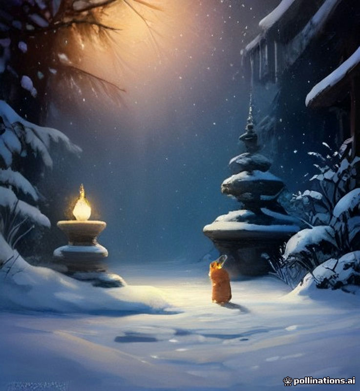
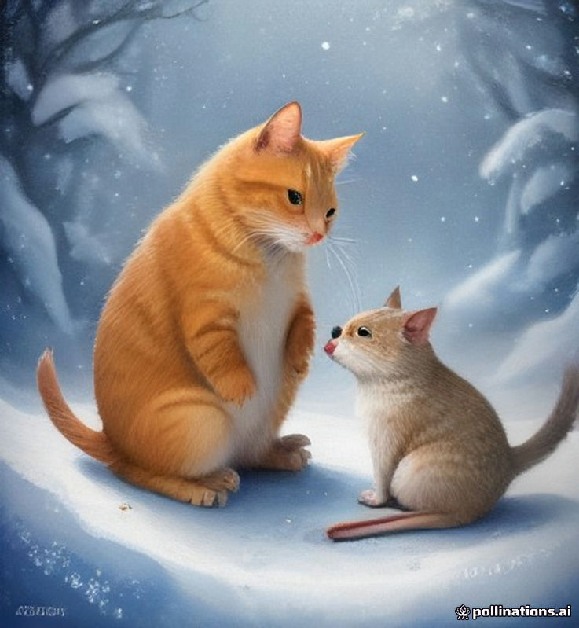
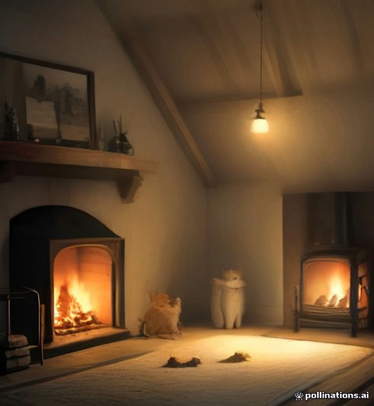

On a quiet, snowy evening in the town square, Loki and Pip discover a delicate glowing moth seeking a safe place to rest.

Snow was falling soft and thick over Loki’s Town, dusting the bakery roof like icing sugar and quiet breathing. Pip snuggled under my ears, his tiny paws tucked in warmth while my paws crunched softly on the fresh cobblestones of the plaza. Every lantern in the square was lit, casting warm orange pools across the drift. That was when Pip squeaked and pointed his pink nose towards the central fountain. Floating just above an icy stone rim was a warm, fluttering light that didn't come from any lamp.

We tipped forward on quiet paws to take a closer look. Sitting on a frost-covered stone bench was a moth with pale silver wings that shimmered like quiet stars. Its tiny belly gave off a gentle, golden glow, pulsing gently like a little beating heart. It didn't fly away when we got close; its wings were heavy with tiny flecks of winter snow. Pip leaned down from my head, whispering a gentle hello so as not to startle the delicate visitor resting in the chilly breeze.
It must be cold, Pip squeaked softly into my ear. I uncurled my teal scarf just a little bit, making a soft, warm woolly cup right beside my chest. Pip reached down with his tiny paws and nudged a fallen dry leaf under the moth's feet. With a tiny rustle of wings, the shimmering moth crept off the cold stone and onto our soft scarf. Its warm golden light bubbled outward, tinting the surrounding snow in shades of soft amber and cozy peach.

We carried our tiny luminous friend safely inside the workshop where the woodstove hummed with gentle heat. We placed the leaf softly near the hearth on a cozy wooden shelf. The moth stretched its silver wings, brightened into a cheery yellow glow, and drifted up towards the warm wooden beams to rest for the night. As Pip settled onto my head with a soft yawn, the town square outside slept under the falling snow, held warm by our glowing bedtime secret.